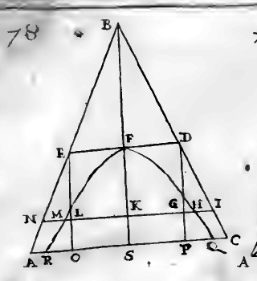

Proposition XI: Volume of a Hyperbolic Conoid¶


Proposition XI · Theorem XI (pp. 75–76, Tab. 10, Fig. 78)
- A portion of a hyperbolic conoid is equal to the cone containing the portion of the conoid, minus two solids: of which the one is a cone whose axis equals half the transverse side of the generating hyperbola,
and its base is the section of the said containing cone touching the portion and parallel to its base; while the other solid is a cylinder whose base is that of the subtracted cone, and whose axis is the same as that of the conoid.
Let there be a hyperbolic conoid whose section through the axis FS is the hyperbola RFQ; and let the section of the containing cone through the same axis be triangle ABC; therefore the lines BA, BC will be asymptotes, and FB the semi-transverse side of the same hyperbola RFQ. Then let there be a plane touching the conoid at F (which will be parallel to the plane of the conoid’s base), and hence the section made in cone ABC will be a circle whose diameter is line ED and center F. Finally, a cylinder having been conceived on this same base, whose parallelogram through the axis FS is EOPD, I say that conoid RFQ is equal to cone ABC, minus cone EBD and cylinder EP. Let any point K be taken on axis FS, through which let a plane be drawn parallel to the plane touching the conoid at F, so that it cuts the cone containing the conoid, the cylinder, and the conoid itself; and the sections will be circles whose diameters will be lines NI, LG, MH. Therefore, because (margin: Conics II.10) rectangle AQC, that is square FD, indeed SP itself, together with square SQ, is equal to square SC; likewise because rectangle NHI, that is square FD, namely KG itself, together with square KH, is equal to square KI; and finally, since square FD is equal to itself, it is evident that all the squares, indeed all the circles whose diameters are AC, NI, ED, etc., of frustum AEDC of the cone
f. 0093 · p. 76containing the conoid are equal to all the circles about diameters RQ, MH, etc. of the conoid, together with all the circles of cylinder EP, whose diameters are OP, LG, ED, etc. Since this is so, cone ABC will be equal to conoid RFQ, together with cone EBD and cylinder EP; that is, cone ABD, minus cone EBD and cylinder EP, will be equal to conoid RFQ, which was to be demonstrated.